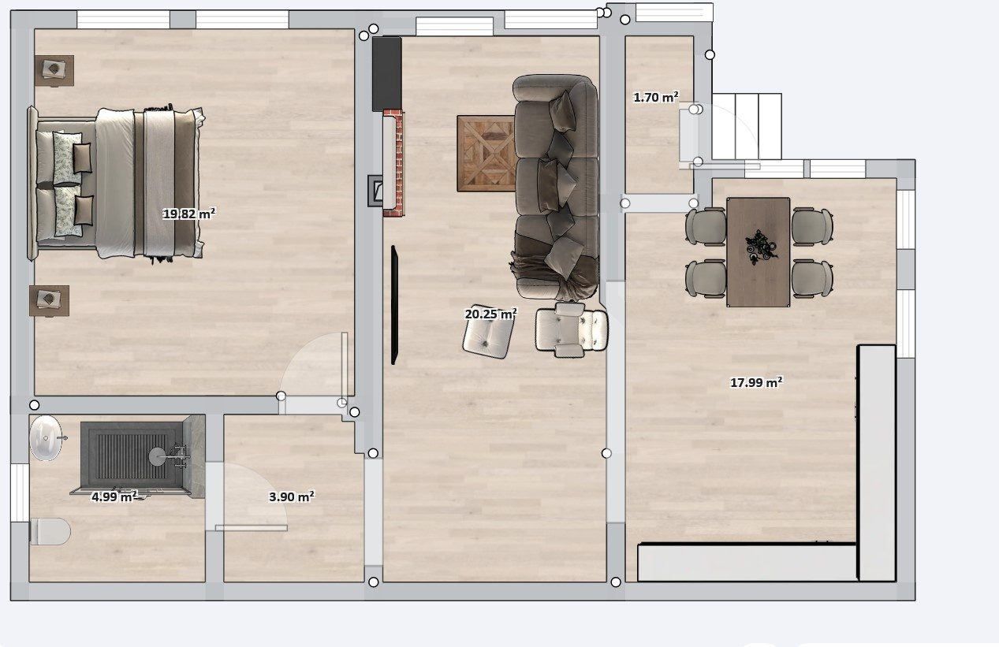
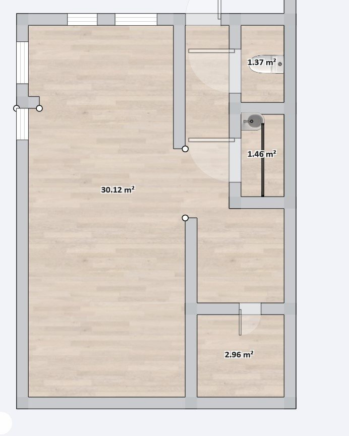

Местоположение:
Село Одринци е хармония от тишина и реални възможности. Само на 15 минути (13 км) от центъра на Добрич по много добър нов път: до града се стига бързо и удобно, а наоколо има тишина и природа. Наблизо има голяма гора, живописни хълмове и езеро, където можете да ловите риба.
До морето има само 40 минути с кола: лесно можете да съчетавате живота извън града с почивка на брега. Плодородната земя е отлична за малко стопанство, а добрата транспортна достъпност прави имота привлекателен и за отдаване под наем – спокойствие, природа и доходен потенциал на едно място.
Тук живеят трудолюбиви съседи: при тях винаги можете да купите прясно месо, мляко и други домашни селскостопански продукти – всичко натурално, истинско, по селски. Това не е просто парцел или къща, а готова среда за размерен, самодостатъчен живот.
Цена: 135 000 €
🗺 Вижте в Google Maps (пътят от Добрич)Търсите нещо истинско, правено за живеене, а не с цел бърза печалба? Този дом е единственото жилище на собствениците, стопанисвано с много любов години наред. Сградата е въведена в експлоатация (Акт 16) през 2014 г., като съчетава уюта на традиционния български стил (камък и дърво) с модерно ново строителство.
Имотът е със 100% чисти документи, без тежести, ипотеки или скрити изненади – купуван отдавна, директно от дългогодишен собственик.
Важни условия за сделката:
Разпределение и удобства
Планове


Личен СПА център (отделна сграда)
Къщата разполага със самостоятелна зона за релакс, която включва:
Двор, поливна система и оранжерия
Дворът е отлично поддържан, с лека денивелация и калдъръмени елементи, овощки, рози и приятна гледка, гарантиращ пълно уединение. Имотът предлага идеални условия за собствено стопанство:
Ние говорим български, руски и английски език
Директно от собственик. Възможен разумен пазарлък.